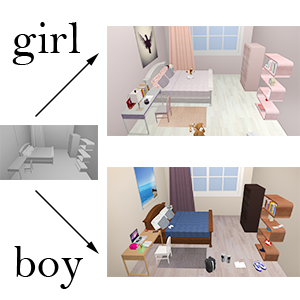

Suiyun Zhang (张穗云)
Ph.D candidate
Institute of Computer Graphics and Computer-Aided Design
School of Software
Tsinghua University
Email: zhangsuiyun13 AT mails.tsinghua.edu.cn
Publications

|
User Guided 3D Scene Enrichment
Suiyun Zhang, Zhizhong Han and Hui Zhang Proceedings of Virtual-Reality Continuum and ITS Applications in Industry (VRCAI), 2016 [paper] [slides] |
|  |
Semantic 3D Indoor Scene Enhancement Using Guide Words
Suiyun Zhang, Zhizhong Han, Ralph Martin and Hui Zhang The Visual Computer Journal, Vol 33, 2017 [paper] [slides] |
Teaching
- Guest Lecturer: Build an Autonomous Car with Raspberry Pi, August 2017
- Teaching Assistant: Introduction to Computer Science Technology, Tsinghua University, 2015 Fall
- Teaching Assistant: Introduction to Computer Science Technology, Tsinghua University, 2014 Fall
- Teaching Assistant: CS184.1X Introduction to Computer Graphics, xuetangx.com, 2014
- Teaching Assistant: C++ Programming, Tsinghua University, 2014 Spring
Honors
- The First Prize Scholarship of Tsinghua University (2017)
- National Scholarship (2010-2012)
Projects
| 100 floor 再下一百层 | |
| Hum!Hum! 嗡嗡嗡 |